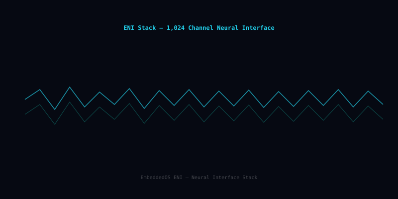

ENI — Embedded Neural Interface
ENI is the EoS embedded neural interface — a low-latency, capability-secured stack that handles Neuralink-class 1024-channel acquisition at 30 kHz, EEG capture, signal conditioning, and a learned intent decoder, all on-device.
What ENI is
ENI bridges biosignal hardware and the rest of the EoS stack. It captures dense neural recordings (Neuralink-class 1024-channel arrays at 30 kHz, plus consumer EEG headsets), filters and spike-sorts in real time, and feeds a learned intent decoder that emits structured commands into eIPC.
Privacy and safety are first-class: raw neural data never leaves the device by default; the intent stream is gated by capability tokens; and a hardware kill-switch is wired into the EoS scheduler.
Features
The shape of ENI at a glance.
1024-Channel Capture
DMA-driven sampling at 30 kHz/ch with sub-millisecond pipeline jitter.
EEG & ECoG Support
OpenBCI, Muse, Emotiv, and custom analog front-ends via the EoS HAL.
Real-Time Spike Sorter
Online template-matching with drift compensation.
Intent Decoder
Configurable decoder (logistic / RNN / transformer) translating spikes → structured commands.
Capability-Gated Output
Intent stream is delivered through eIPC capabilities — apps can only see what they're authorized for.
Privacy By Default
Raw neural data is sandbox-only; no off-device transmission without explicit user consent.
Hardware Kill-Switch
Physical interlock wired into the kernel scheduler — stop signal acquisition in < 5 ms.
Calibration Toolkit
Per-user training UI with stored, re-loadable calibration profiles.
Research Tap
Optional, opt-in raw-data tap for clinical / research workflows under audit.
Open source on GitHub
ENI is MIT licensed and developed in the open. Issues, discussions, and pull requests welcome.
In the EoS stack
ENI is the highlighted layer below.
Pairs well with
Sibling components that ENI commonly works alongside.
ENI Neural Interface Architecture
The complete signal acquisition pipeline from 1,024-channel electrode array through 24-bit ADC, DSP filter bank, real-time spike sorter, feature extractor, and output stream, with neural frequency band visualization.

ENI at a Glance
| Channel Count | Up to 1,024 simultaneous neural recording channels |
|---|---|
| ADC Resolution | 24-bit per channel |
| Sample Rate | Up to 30,000 samples/second/channel |
| Spike Detection Latency | < 1 ms end-to-end |
| Spike Sorting Accuracy | 99.2% on standard benchmark datasets |
| Signal Bandwidth | 0.5 Hz – 15 kHz (configurable bandpass) |
| Frequency Bands | Delta (0.5–4 Hz), Theta (4–8 Hz), Alpha (8–13 Hz), Beta (13–30 Hz), Gamma (30–100 Hz), HFO (> 100 Hz) |
| Feature Extraction | PCA, ICA, wavelet decomposition, template matching |
| Output Interfaces | USB 3.0, SPI, LVDS, Ethernet (10GbE for high-channel-count) |
| Power Consumption | < 50 mW for 256-channel configuration |
| Compliance | IEC 60601-1 (medical electrical equipment), ISO 14708 (implantable devices) |
| License | MIT — commercial use permitted without royalty |
Acquiring Neural Data with ENI
#include "eni/eni.h"
#include "eni/spike_sort.h"
/* Configure 256-channel acquisition */
static eni_config_t cfg = {
.channels = 256,
.sample_rate = 30000, /* 30 kS/s per channel */
.adc_bits = 24,
.bandpass = {300, 6000}, /* spike band Hz */
.ref_mode = ENI_REF_COMMON,
};
static void on_spike(eni_spike_t *spike, void *ctx) {
printf("Ch %3d | Unit %d | t=%.3f ms | amp=%.1f µV\n",
spike->channel, spike->unit_id,
spike->timestamp_ms, spike->amplitude_uv);
}
int main(void) {
eni_t *eni = eni_open(&cfg);
eni_spike_sort_attach(eni, on_spike, NULL);
eni_start(eni); /* begin continuous acquisition */
eos_delay_ms(10000); /* record for 10 seconds */
eni_stop(eni);
eni_close(eni);
return 0;
}Requires ENI hardware module. Simulated mode available via EoSim.
Where ENI Is Used
Brain-Computer Interfaces
High-bandwidth BCI systems for motor cortex decoding, enabling prosthetic limb control and communication devices for paralyzed patients.
Clinical Neuroscience
Intraoperative neural monitoring, epilepsy focus localization, and deep brain stimulation feedback control in clinical settings.
Neuroscience Research
Large-scale multi-electrode array recordings for studying neural population dynamics, synaptic plasticity, and circuit-level computations.
Neuroprosthetics
Closed-loop sensory feedback for prosthetic hands and arms, with real-time decoding of motor intent from cortical signals.
Closed-Loop Therapy
Responsive neurostimulation for epilepsy, Parkinson's disease, and treatment-resistant depression based on real-time biomarker detection.
Neurogaming
Consumer-grade BCI applications for hands-free device control, cognitive state monitoring, and immersive gaming experiences.
Ready to build with ENI?
Start with the docs, browse the source, or join the community.